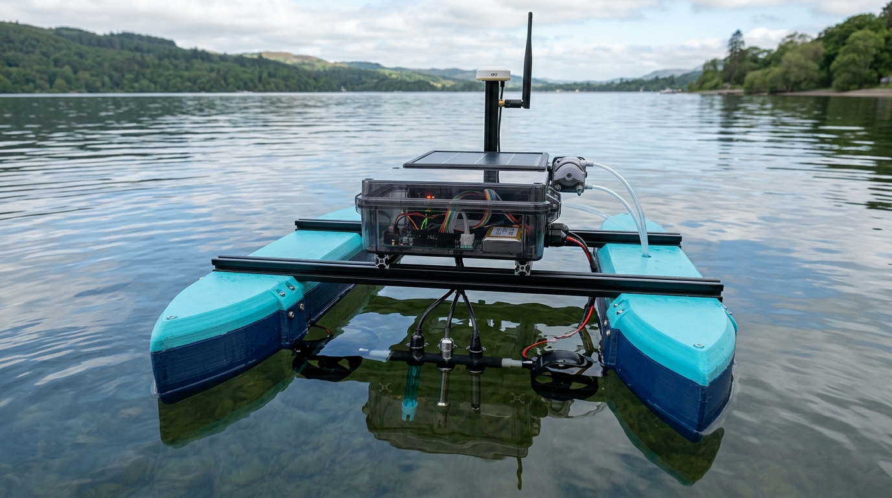
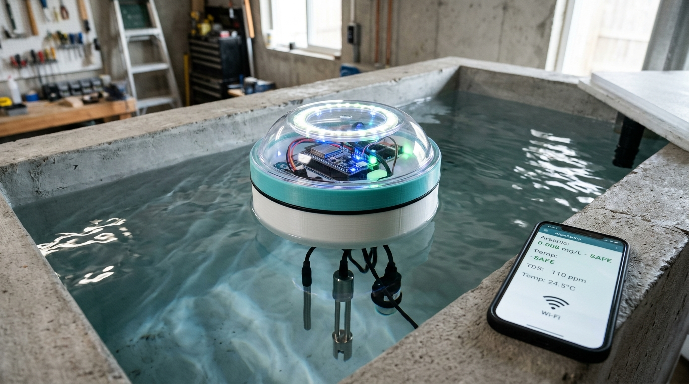

Waiting
No data
No reading yet
Load demo data or test a sample to see a result.
Load demo data or test a sample to see a result.
Arsenic in µg/L. India and the WHO allow up to 10. The sensor can see from 20.
Every sensor that has sent a reading, and how arsenic has changed over time.
| Time | Device | Arsenic (µg/L) | Verdict |
|---|
No laboratory results yet. A lab test is the only way to confirm the sensor.
| Time | Device | Sensor (µg/L) | Lab (µg/L) | Method |
|---|
A ready-made report with the reading and time is prepared below; add the village or hand-pump name. Send it to the water department or Gram Panchayat. Only real device readings can be sent.
Open the reportHealth:
A CSV or JSON file from the instrument with potential (mV) and current (µA) columns. It goes through the same pipeline as a live scan and is kept as evidence, labelled "replay".
The factory calibration (slope 0.8563 µA per mg/L, R² 0.9967) was fitted to four SYNTHETIC standards from the simulated scan generator. It lets the software run; it is not evidence of accuracy. Enter a laboratory calibration (external standards or standard addition) before any field use.
Planned for the robot: a LoRa radio (865–867 MHz band in India) to send results to a shore station without SIM fees, and GPS to tag each reading. The current firmware uses Wi-Fi, and each device's location is entered by hand.


| Contaminant | Status | Detection limit | India limit (BIS) | Method |
|---|
| Reading | Limit | What happens |
|---|---|---|
| 10 µg/L | ||
| 20 µg/L | ||
| 150 µg/L | ||
| 20 µg/L | ||
| 6.5 – 8.5 | ||
| 5 NTU | ||
| 1500 µS/cm |
| Time | Arsenic (µg/L) | Verdict | Source |
|---|